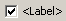
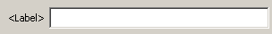
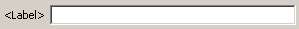
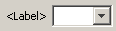
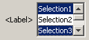

An example of a default dialog. It shows a selection of available components, grouped into two groups, each surrounded by titled border.
NodeModel then. There
is no way (and no need) to layout these components - they will
automatically show in the dialog below each other (or next to each
other, depending on the currently active orientation, see setHorizontalPlacement), in the
order they
have been added. You can surround them with a border to make the dialog
look nicer and you can create new tabs to organize them. But that's all.createNewGroup(<Title>)
command
will be put into the frame. The next createNewGroup
command closes the
previous group and opens a new one. If you want to add components below
the last border, you can use closeCurrentGroup.
Components added after
this command will be placed outside any border.SettingsModel.
The settings model expects a string identifier that it uses to store
and load the value of the component, and a default value which it holds
until a new value is loaded. Additional parameters are necessary,
depending on the type of component, most require a string, that will be
displayed in front of the component as label. For more details, please
refer to the documentation of the specific component.SettingsModels
into the
NodeModel:createCloneWithValidatedValue
method,
create a temporary settings model with the new value from
a NodeSettings object. Use this temporary object to access the new
value, but make sure not to change any permanent variables in the
NodeModel. Release the clone models after validateSettings
finishes.| Looks | Default Component Class | Accepted SettingsModels | Getter Methods | Notes |
|  | DialogComponentBoolean | SettingsModelBoolean | boolean getBooleanValue() | Stores a boolean value according to the state of the checkbox. |
 |
DialogComponentColumnFilter | SettingsModelFilterString | List<String>
getIncludeList() List<String> getExcludeList() |
Implements support for an include and exclude list. Mainly used for column filtering. |
 |
DialogComponentColumnNameSelection | SettingsModelString SettingsModelColumnName |
String
getStringValue() String getColumnName() boolean useRowID() |
Stores the name of the selected column. Uses the
renderer of the type of the corresponding column. Using the SettingsModelColumnName will add a RowID option to the select list. |
 |
DialogComponentFileChooser | SettingsModelString | String getStringValue() | The stored string is the (absolut) filename of the selected file. |
 |
DialogComponentNumber | SettingsModelDouble SettingsModelInteger SettingsModelDoubleBounded SettingsModelIntegerBounded |
double getDoubleValue() int getIntValue() |
Accepts a number (double or integer) in an editable spinner. The bounded models will not accept values outside the specified range. |
 |
DialogComponentNumberEdit | SettingsModelDouble SettingsModelInteger SettingsModelDoubleBounded SettingsModelIntegerBounded |
double getDoubleValue() int getIntValue() |
Accepts a number (double or integer) in an EditField. The bounded models will not accept values outside the specified range. |
 |
DialogComponentDoubleRange | SettingsModelDoubleRange | double getMaxRange() double getMinRange() |
Stores a min and a max floating point number. |
|  | DialogComponentPasswordField | SettingsModelString | String getStringValue() | Accepts any string in a textfield. The entered string will not be echoed - a dot appears for each character. The string stored in the settings model is the encrypted password. The component provides static encryption and decryption methods. |
|  | DialogComponentString | SettingsModelString | String getStringValue() | Stores any string entered in the field. |
 |
DialogComponentMultiLineString | SettingsModelString | String getStringValue() | Stores a string, that could contain multiple lines. |
|  | DialogComponentStringSelection | SettingsModelString | String getStringValue() | The user can select a string from the list. The combobox is not editable. |
|  | DialogComponentStringListSelection | SettingsModelStringArray | String getStringArrayValue() | The user can select multiple strings from the list. The select box is not editable. |
 |
DialogComponentButtonGroup | SettingsModelString | String getStringValue() | The user can choose one option. The action command of the selected RadioButton is stored in the SettingsModelString. |
 |
DialogComponentColorChooser | SettingsModelColor | Color getColorValue() | The SettingsModelColor can also contain null for no color. |
setEnabled(false) on their SettingsModel.
You can register a ChangeListener
with a SettingsModel and
change the enable status of another one depending on the value of the
first one, for example. Disabled SettingsModels
still store, save and
load their value (this way a value entered in the enabled component is
preserved). When you start using the values from the SettingsModels
in your
NodeModel implementation, you need to check
the enable status by
calling isEnabled().
When changing the values in the SettingsModels (or when instantiating
them and assigning an initial value), you need to carefully maintain a
consistent state between those SettingsModels whose state depend on
each other. For example, if you have a Model that holds a string value
and whose enable status depends on a boolean SettingsModel, you need to
make sure that you disable the string model, whenever you assign false
to the boolean model (and, if you initialize the boolean model with
false, disable the string model!). An example is available here.setDefaultTabTitle(String)
in your NodeDialogPane (that is derived from
the
DefaultNodeSettingsPane). The specified string
appears in the tab's
title.createNewTab(String).
The specified string is displayed as title of the new tab. Components
added after this call will be placed into the new tab. Also groups work
in the new tab. Previous tabs are not accessible anymore. New tabs are
placed right of and behind already existing tabs. Or, you can call createNewTab(String, int) to specify the position the new tab should be placed at. The specified title must
be unique. A specific tab can be selected (brought to front) by calling selectedTab(String).setHorizontalPlacement(boolean).
If set
to true the next components will be added
next to each other. If set to false the next
component is place below the previous one.NodeDialogPane).
You can still use
the
DialogComponents, arrange them in your custom panel and benefit from
their loading and saving capabilities: Each component provides a getComponentPanel()
method that returns the panel holding the component. This panel can be
placed into your dialog pane. In the dialog's loadSettingsFrom and
saveSettingsTo methods, you need to call the component's
loadSettingsFrom and saveSettingsTo
respectively. The usage of the
corresponding SettingsModels in the NodeModel
is the same as if they
were used in a DefaultNodeSettingsPane.NodeModel doesn't
know it's dialog, and vice versa. Values are transfered through
settings objects. You need to implement a mechanism to store and load
your current settings anyway - we re-use it to transfer the current
values into the dialog. Also, the NodeModel
must be able to reject
invalid/inconsistent values (in the validateSettings
method).
If we would have only one object, the invalid settings would be set to
let the NodeModel validate them and
canceling the dialog then
would leave these invalid or inconsistent values in the
NodeModel.SettingsModel
passed will be used to
determine the width.